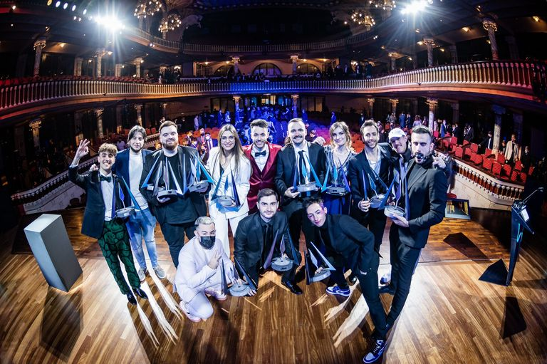

La velada del año 2: Conoce a los nuevos participantes
Ibai Llanos dio una rueda de prensa el domingo 20 de febrero a través de su canal de Twitch para compartir información sobre la segunda edición de La Velada del Año.
El vasco contó con Reven y el boxeador profesional Sandor Martín a la hora de anunciar todos los participantes de este evento en el que varios 'streamers' se enfrentarán sobre un ring.
LOS COMBATES
El primer enfrentamiento será entre Carola y Spursito. El primero dijo que tenía algo de experiencia en el mundo del boxeo y que había aceptado el desafío por su salud.
El segundo señaló que tenía que trabajar mucho, ya que considera que su rival es más fuerte que él.
En el siguiente combate lucharán Viruzz y Momo. Este último compartió que estaba contento por poder representar a su país, Argentina, y que tenía por delante un entrenamiento muy duro.
Su contrincante resaltó que había sido jugador de balonmano durante años y que llevaba casi toda su vida compitiendo.
La tercera pelea será entre Ari Gameplays y Paracetamor. La mexicana declaró: "Tengo sangre caliente y quise meterme porque no estoy muy metida con el deporte. Quería que esta fuera mi excusa para ponerme las pilas".
La que será su rival sobre el ring admitió que no había boxeado nunca y que no solía hacer deporte, pero dijo que tenía muchas ganas de ponerse en forma para el evento: "Yo ya tengo mi plan y la idea es mantenerlo".
Luzu y Lolito se enfrentarán en el cuarto combate. El primero reveló que Ibai Llanos le había ofrecido participar y en un primer momento rechazó la propuesta.
Su contrincante dijo que conocía el mundo de los deportes de contacto desde que era pequeño y que estaba deseando competir en La Velada del Año desde que vio su primera edición.
La gran sorpresa de la noche llegó con el anuncio de los participantes del quinto y último combate, Jaime Lorente y Míster Jägger. El actor de La Casa de Papel explicó que había seguido el evento el año anterior y quería competir en él.
Su rival resaltó que estaba muy contento tras descubrir que luchará contra una persona alejada del mundo de los 'streamers'.
OllieGamerz, campeón de un Squid Game Minecraft que pasa a la historia de Twitch
Un streamer gallego se enfrenta a un creador de contenido murciano en la final del Juego del calamar. ElXokas contra OllieGamerZ en la mayor final de un evento de youtubers en Twitch, luchando para ver quién consigue ganar este juego coreano tradicional.
Después de un corto combate a cuchillos, el joven murciano de 26 años, Sergio, se alza con la victoria y se queda con el premio de 100.000 dólares.
Pero en Squid Game Minecraft, el mayor evento de Twitch Rivals de la historia, ninguno de los finalistas pierde. Ambos han ganado algo. Mientras que OllieGamerZ se ha llevado 100.000 dólares y la medalla de oro, ElXokas ha batido su récord de espectadores
con más de 1,2 millones de personas siguiendo el directo. Un hito que sitúa a este creador gallego en el Top 3 de los streams más vistos de Twitch.
El Squid Game Minecraft mezcla dos de los fenómenos más populares del sector del ocio y el entretenimiento.
En octubre de 2021, El Juego del calamar batió récords de audiencia en Netflix con más de 111 millones de espectadores.
Mientras que Minecraft es el videojuego más vendido de la historia, con más de 238 millones de copias vendidas en todo el mundo.
Los Premios Esland, algo así como los Goya de Twitch, son todo un triunfo y han venido para quedarse
 El Palacio de la música de Barcelona habría la primera edición de los Premios ESLAND con banda sonora en directo y un anfitrión, organizador, como TheGrefg soltando chascarrillos en traje rojo y pajarita.
Estos premios nacen con la intención de reconocer la labor de los creadores de contenido a lo largo de todo el año 2021,
uno en el que la plataforma Twitch ha seguido su crecimiento exponencial que no parece haber cesado este 2022.
El ganador de la noche fue, como no podía ser de otra manera, Ibai Llanos, que se llevó más de un reconocimiento, aunque destaca el de Mejor Streamer del Año. Hasta el vasco se puso americana, eso sí, con su inseparable camiseta negra.
Estos fueron todos los ganadores de la noche:
Mejor Streamer del año - Ibai Llanos
Mejor serie de contenido - Tortillaland (organizada por AuronPlay)
Stremaer revelación - elXocas
Mejor evento del año - La velada de boxeo de Ibai
Mejor trayectora -Fernanfloo
Mejor Talk Show - The Wild Project (Jordi Wild)
Premio al mejor jagger - Jagger boxeador
Mejor canción del año - El cuarteto de Ibai (ft. Lucas Requena & ortoPilot)
Mejor streamer de IRL - Kidi
Mejor Caster del año - Kakuka (caster de 'Valorant')
Mejor reportera de eSports - Cristinini
Mejor jugador de eSports - M1xwell (Valorant, con G2)
Mejor Roleplayer del año - AgenteMaxo
Mejor baile del año - PapiGavi
Enfado del año - Agustin51
Fail del año - Ibai Llanos (tapar el beso de Rosalía y Rauw en Los40)
Mejor clip del año - Kun Agüero por "Vamo a juga"